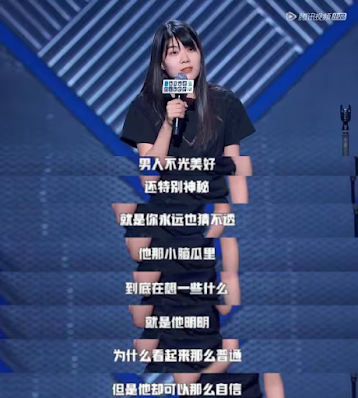
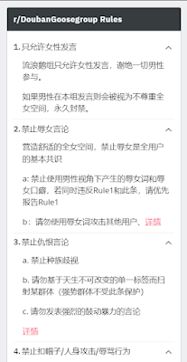
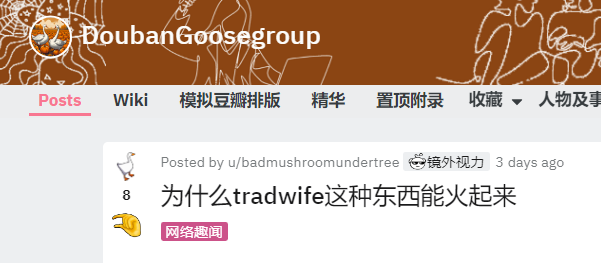

对普通女权，田园女权，与激进女权的简要介绍
普通女权，田园女权，激进女权是中国最常见的三种女权形式。本文将简单介绍这三种观点，以及介绍它们的区别和联系，以方便读者们快速入坑。
为了叙事清楚，在本文中，这三种女权的定义分别是：普通女权试图推翻父权制，追求男女平等；田园女权追求女性特权；激进女权主张性别分离。
一些共识
目前这个世界仍然处在父权体系下，它是保守，死板，不公平的，给予一部分男人更多权利和资源。1 大部分男性和绝大部分女性都是父权制的受害者。
注：男性完全可能是父权制的受害者。比如一个住在穷山村，没钱，找不到老婆（新生儿男女性别失衡，以及天价彩礼），而被周围邻居指指点点的大龄青年。
中国的女权运动，和其他的人权运动内容并无不同，本质上是少数既得利益者和多数被剥削压迫者的冲突。2
虽然女权思潮从外国开始并流传到中国，但大多数人是发自内心支持女权的。中国的女权运动并不一定有境外势力的参与。
目前，一部分（甚至可能是一大部分）中国年轻人在对女权/男权的态度上十分激进，相关话题往往充斥的浓浓的火药味。不建议任何人和不熟悉的人（尤其是异性）讨论有关话题。
这世界上是有正常人的，男性支持女权不一定是为了骗炮。
普通女权
普通女权追求的是男女平等，即“平权”，其反对的不是“男性”，而是导致男女不平等的父权制度。在这个制度下，男人垄断了大多数的资源，而女人由于其性别遭受了大大小小的歧视。1
普通女权反对消费主义陷阱和身体羞辱。
普通女权的常见观点包括：女性是一种社会文化建构出来的产物。而所谓“女性特质”，是受到阶级、民族、宗教、教育等因素影响而形成的。在不同的社会和历史阶段，对女性气质/男子气概的理解不同。（比如法国皇帝会戴假发，穿丝袜，高跟鞋，以彰显自己的男子气概）1
普通女权提出的口号包括“同工同酬”，“妇女能顶半边天”，“消除对女性的刻板印象”。
田园女权
田园女权是中国特色的女权，是新旧思想混合的产物。它虽然多由女性主张、对现代女性的权利寸步不让，但其基底却是男权的，也只有在一个男权社会才行得通。3 “要男人做事供给一切，完全是19世纪的想法；但是，又要男女平等，现代女性的权利又要齐全。”
此外，还有另一类主张，也可以归类到田园女权中。主张男性与女性是竞争关系，“女权”是一种对男性的挑战和进攻，是男人和女人之间你死我活的战争。1 让男性受害就意味着让女性受益。
田园女权提出的口号包括“你负责赚钱养家，我负责貌美如花”，“girls help girls”，“他明明那么普通，却那么自信”
注：普通女权也会说girls help girls，但女权承认people help people，即男女之间是可以互相帮助的，而田园女权会认为“girls help girls only，女性只应该帮助女性”。
另注：激进女权也会说单女互助，不与 与男性接触的人 互助，即认为与男性接触的女性属于向男性投降，不属于女权群体了。
田园女权的代表人物是杨笠。她（或者说，镜头前的她）在贬低男性的同时，还有挑对象的打算（或者至少是这么说的）。

激进女权
激进女权轻视或否定男性，主张性别分离，即尽量避免与男性接触。
激进女权的一个基本主张是“6B4T”，“6B”指不结婚、不生育、不恋爱、不（与男性）发生性行为、不购买厌女产品和单女互助（不与已婚者互助）；“4T”指脱束身衣、脱宗教、脱御宅文化、脱偶像。
这些倡导的思路来自韩国女权，通过网络传入后得到了不少国内女权者的认同。4
激进女权也包括对社会和法律失望的普通女权。比如男性猥亵女性却被法官和稀泥。由于法律不公，导致她们认为女性只能通过远离男性来保护自己。与此同时，激进女权也会认为，整个社会无法通过温和的方式改善，有时候一些根深蒂固的想法，可能就是需要极端的刺激才会有可能改变。
注：同样的事情也发生在男性身上。被女性诬告成电车痴汉事件 也会导致男性对法律失望，变成激进男权。激进男权思潮在知乎中相当常见。一个例子
另注：假如一条法律：“男性与女性有任何争执时全部判男性赢”。这条法条的实施会导致 绝大多数女性完全变成激进女权，再不与男性有任何交流。与之类似的是，不承认女性的独立人格与判断能力的一些民间习俗 也会导致女性变成激进女权（比如买卖老婆）。
这里举一个reddit的DoubanGoosegroup群组（红迪豆瓣鹅组）的例子，作为极端女权言论的代表。大家也可以浏览这个群组里的一些帖子，感受一下“性别分离”的感觉：


其他
所有的命运的馈赠，都已经暗中标好了价格，即，天下没有免费的午餐。比如，女性有更长的产假，就可能会导致公司招人时更性别歧视。
恶法伤人，恶劣的判决也伤人，恶法导致男女双方没有受益者。
韩国规定三次约会后女性仍然拒绝，第四次就约会成为性骚扰。导致男性不愿不敢与女性约会，导致韩国的男性与女性都是受害者。
中国曾经实行流氓罪法，尤其是严打时期。它既伤害男性的名誉权和自由，又伤害了女性的自由择偶权。比如迟志强案。
一些推荐
推荐《海马星球》，一个有关女权的高水平的播客和博客
一篇支持激进女权的激进女权介绍，歪脑的很多文章都支持激进女权。
维舟的这篇文章对田园女权的讲解比较深刻，非常推荐阅读。
《人渣宣言》是一本激进女权作家写的书，从中可以看出激进女权的一些观点。
mhyyyy做的讲解女权主义的视频，他的分类方式与本文不同。
一些乱七八糟的东西
一篇讲girls help girls的漫画，我看着挺感动的
一篇低水平的激进女权的文章
一篇奇文：仇外仇美上头了
2024/06/06更新：
现在中国网络上男女关系更加紧张了，身边的男性朋友（都是年轻人）有一大半认为女权主义太过头了，女性朋友似乎也有越来越多的人想要“远离男性”。
2025/04/21更新：
好像男女关系更紧张了，应该是因为胖猫案。